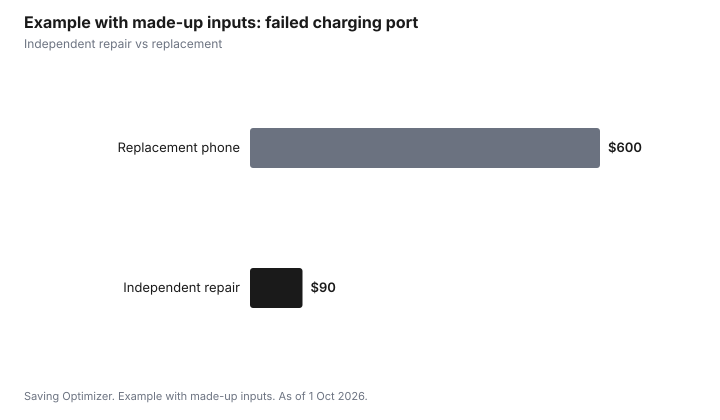

Technology · Canada
Right to Repair in Canada: What the Copyright Act Changes and Quebec's Rules Mean for You

In Canada, right to repair took two steps. Federally, amendments to the Copyright Act (Bills C-244 and C-294, royal assent 7 November 2024) make it legal to get around digital locks to diagnose, maintain or repair a product, and to make devices and programs interoperable. They do not require manufacturers to sell parts or tools. Quebec goes further: its 2023 planned obsolescence law bans deliberately shortening a product's life and, since 5 October 2025, requires information on parts and repair availability and public repair information.
Key takeaways
- Federal: you or a repair shop may bypass digital locks to diagnose, maintain or repair a product (C-244).
- Federal: bypassing locks to make devices interoperable is allowed (C-294).
- The federal changes do not force manufacturers to supply parts, tools or manuals.
- Quebec: planned obsolescence banned; parts at a reasonable price, installable with common tools; repair information public.
- Quebec complaints go to the Office de la protection du consommateur.
The federal Copyright Act changes
| Bill | What it allows | What it does not do |
|---|---|---|
| C-244 (diagnosis, maintenance and repair) | Circumventing technological protection measures to diagnose, maintain or repair a product | Allow copyright infringement; require parts or tools |
| C-294 (interoperability) | Circumventing locks to make a program or device interoperable with others | Allow copyright infringement; require manufacturers' help |
Quebec's planned obsolescence law
Quebec passed Bill 29 on 3 October 2023, amending its Consumer Protection Act. It bans selling goods whose normal life has been deliberately limited. Since 5 October 2025, consumers can get information on the availability of spare parts and repair services before buying; parts must be offered at a reasonable price and be installable with common tools; and manufacturers must make repair information accessible. A legal warranty of good working order for certain electronics and appliances is part of the law; more measures phase in. Check the Office de la protection du consommateur for what applies now.
What it means for you
- Independent repair is legal even when software locks are involved, but parts and tools may still be hard to get outside Quebec.
- Before buying, ask about parts availability and software support length.
- In Quebec, ask the seller about parts and repair availability, and contact the OPC if a product fails early.
- Keep receipts; warranties and provincial consumer laws still apply.
Quebec's warranty of good working order
The next phase of Quebec's law creates a legal warranty of good working order for certain new goods bought from 5 October 2026. If a covered product stops working properly during the warranty period, the consumer can go to either the merchant or the manufacturer, and they must repair it at their cost or have it repaired by someone else. The warranty covers parts and labour. It does not cover normal maintenance or damage resulting from abuse. Other legal warranties continue to apply.
| Goods | Warranty |
|---|---|
| Stove, refrigerator, freezer, air conditioner, heat pump | 6 years |
| Washer, dryer, dishwasher | 5 years |
| Television | 4 years |
| Laptop or desktop computer, video game console, cell phone, tablet | 3 years |
What Quebec's repairability rules require now
- Manufacturers must disclose online whether they guarantee the availability of replacement parts, repair services and repair information.
- Parts must be available at a reasonable price, and replaceable with tools that are commonly available.
- Manufacturers must make information needed to maintain or repair goods accessible.
- Techniques that make maintenance or repair harder can be prohibited, subject to exceptions set by regulation.
What happened federally beyond the Copyright Act
In 2024, the federal government also consulted on a broader right-to-repair framework, including on durability and repairability. As of 1 Oct 2026, no federal law requires manufacturers to sell parts, tools or manuals to consumers or independent shops across Canada. Outside Quebec, your main tools are warranties, provincial consumer protection laws, and the freedom to repair under the amended Copyright Act.
Step by step: using your repair rights
- Check the manufacturer's warranty and any extended or credit card coverage first.
- In Quebec, check whether the product is covered by the warranty of good working order and when you bought it.
- Ask the manufacturer whether parts and repair information are available for your model.
- Get a quote from an independent repair shop if the manufacturer's price is high; repairs that bypass digital locks are legal for diagnosis, maintenance and repair.
- Keep receipts and records of the problem and every contact.
- In Quebec, contact the Office de la protection du consommateur if a merchant or manufacturer refuses a covered repair; elsewhere, contact your provincial consumer protection office.
Example with made-up inputs: repair vs replace
These numbers are an example with made-up inputs, not real repair prices.
| Option | Cost |
|---|---|
| Independent repair | $90 |
| Replacement phone | $600 |

Sources
- Justice Laws, An Act to amend the Copyright Act (diagnosis, maintenance and repair), S.C. 2024, c. 26, as of 1 Oct 2026; Parliament of Canada LEGISinfo, Bills C-244 and C-294, royal assent 7 Nov 2024.
- Quebec, Act to protect consumers from planned obsolescence and to promote the durability, repairability and maintenance of goods (Bill 29, passed 3 Oct 2023), as of 1 Oct 2026. Parts, repair services and repair information obligations from 5 Oct 2025.
- Office de la protection du consommateur, warranty of good working order announcement and durations, as of 1 Oct 2026.
- The costs in the example table and chart are made-up inputs.
Frequently asked questions
Is there a right to repair law in Canada?
Partly. 2024 Copyright Act amendments allow getting around digital locks to repair products and make them interoperable. Quebec has a broader planned obsolescence and repairability law.
Can I legally bypass software locks to fix my phone?
Under the Copyright Act amendments (C-244), circumventing technological protection measures to diagnose, maintain or repair a product is allowed. It does not permit copyright infringement.
Do manufacturers have to sell me parts?
The federal changes do not require it. In Quebec, since 5 October 2025, parts must be offered at a reasonable price and installable with common tools for covered goods.
What is Quebec's planned obsolescence law?
Bill 29, passed 3 October 2023, bans planned obsolescence and adds repairability rules, with measures phased in. The Office de la protection du consommateur oversees it.
Does right to repair void my warranty?
Warranty terms and provincial consumer laws still apply. Ask the manufacturer and keep records.
How long is Quebec's warranty of good working order?
For new goods bought from 5 October 2026: 6 years for stoves, refrigerators, freezers, air conditioners and heat pumps; 5 years for washers, dryers and dishwashers; 4 years for televisions; and 3 years for computers, game consoles, cell phones and tablets.
Who do I contact for a repair under Quebec's warranty?
Either the merchant or the manufacturer. They must repair the product at their cost or have it repaired by a third party, and neither can send you to the other.
Researched and drafted with AI assistance and fact-checked against official Canadian sources. How we create content.
Disclosure: No manufacturers or repair shops are named or ranked. Laws and public bodies are named for information only. Saving Optimizer may earn a commission if a partner link is added later; no partnership is claimed. Education only. This is not legal advice.